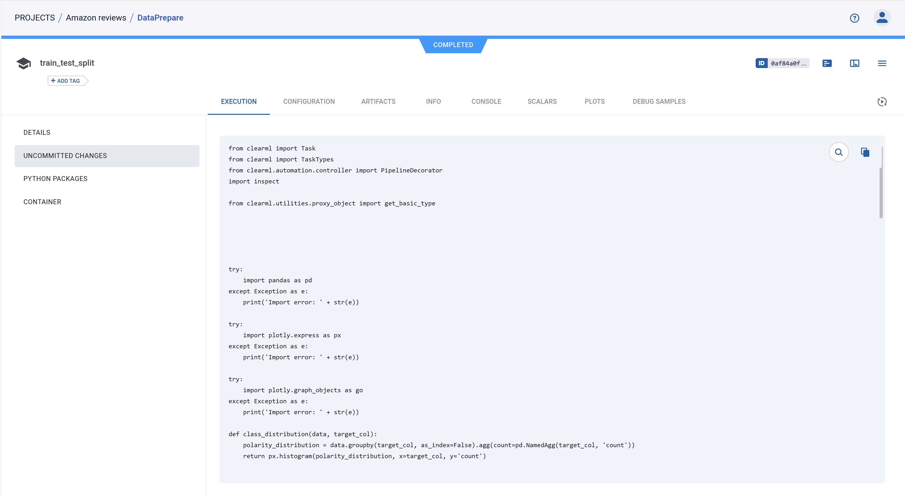
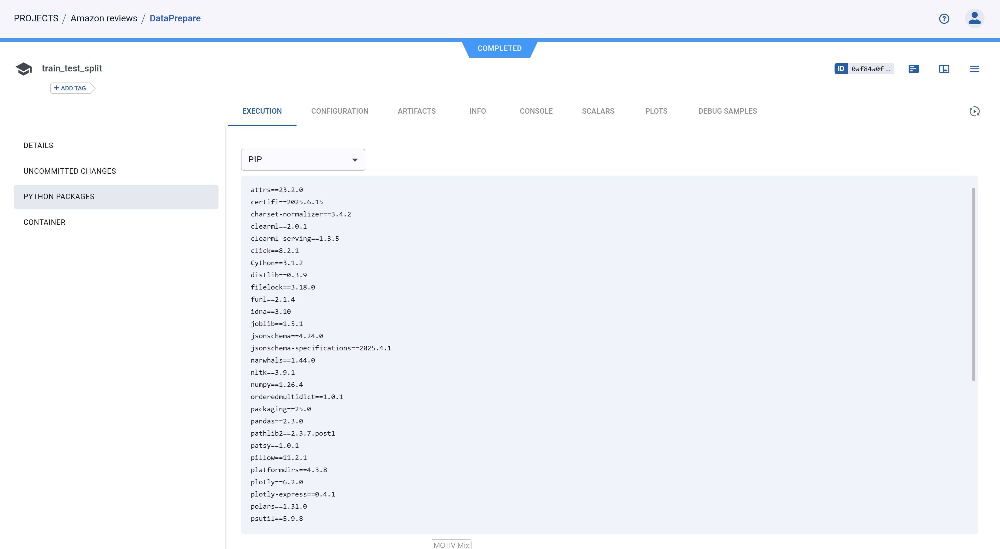
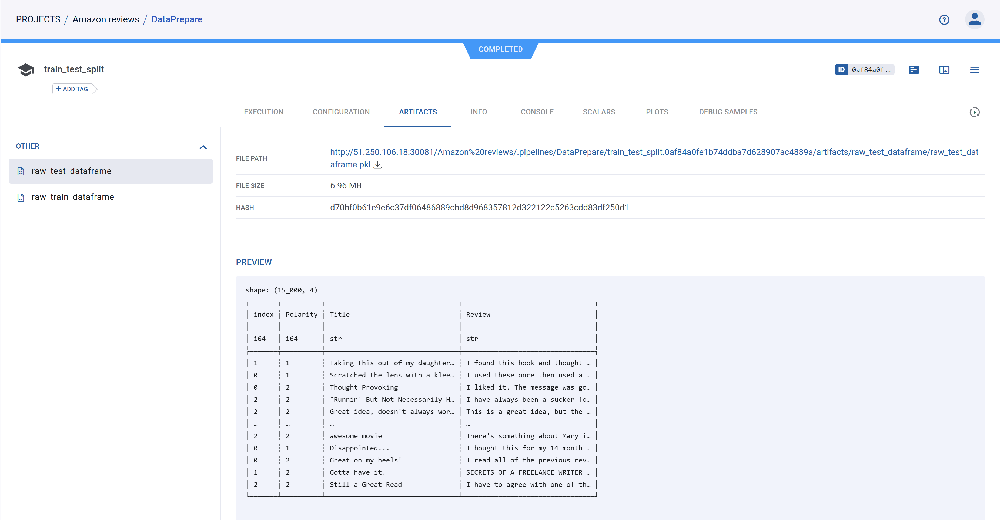
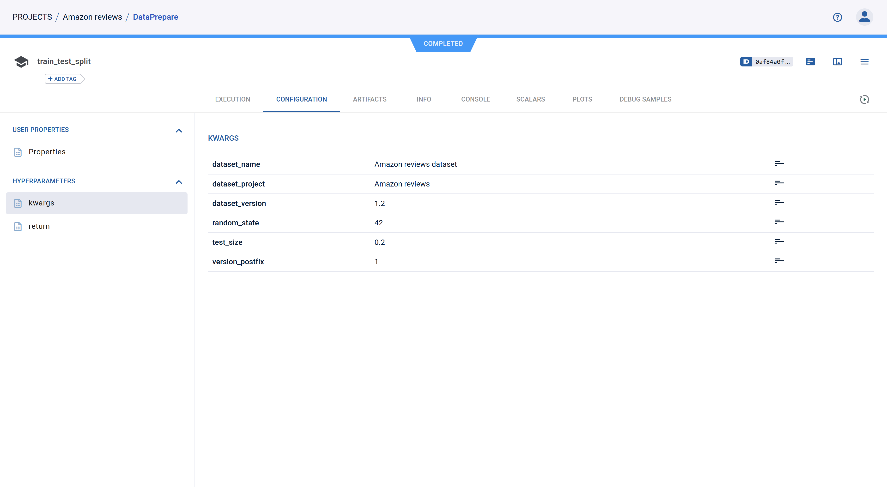
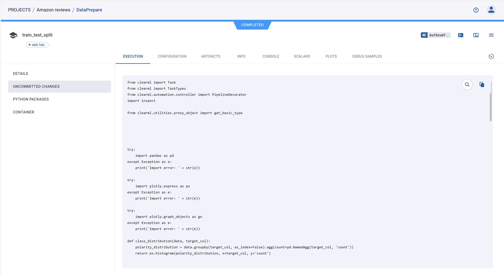
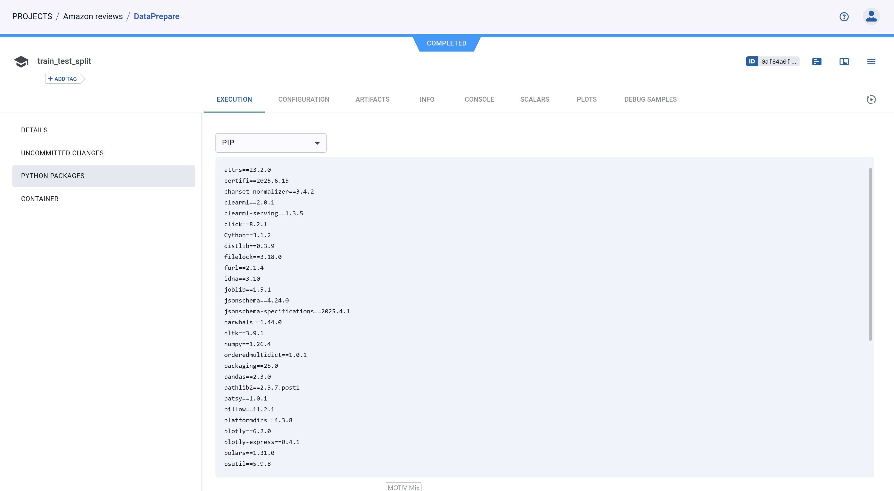
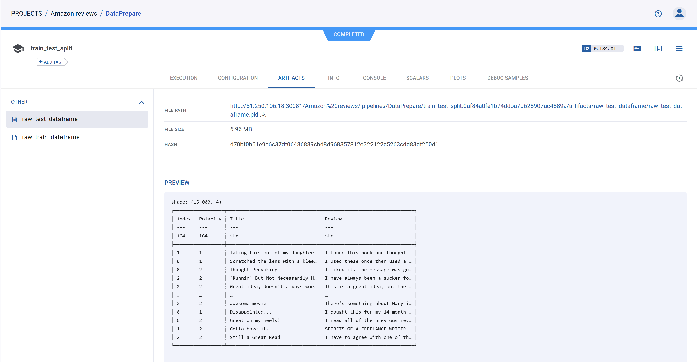
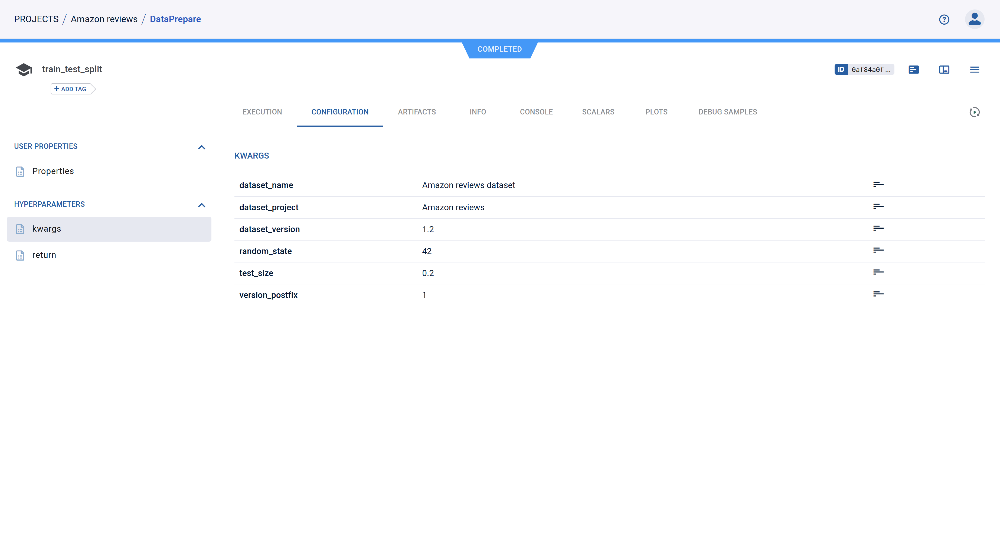

ClearML Pipelines
Теперь разберем работу с ClearML agent и ClearML pipeline.
Настойка ClearML agent
Быстрый его запуск разобран в 2. clearml_yandex_kube.md, сейчас мы уделим внимание его более детальной настройки и чуть-уть разберем его helm chart.
Весь перечень параметров представлен в репозитории clearml-helm-charts
- Стоит уделить внимание версии самого ClearML-agent, на момент подготовки курса доступна версия 1.9.3, но она не корректно работает с задачами в очереди (см. issue). Поэту ставим специально понижаем версию до последней рабочей.
agentk8sglue:
...
extraEnvs:
- name: CLEARML_AGENT_UPDATE_VERSION
value: "==1.9.2"- Также стоит изменить образ который будет использоваться для запуска задач на нужный вам (возможно кастомный). Опять же советую использовать python не выше
3.11, что бы не возникало проблем с использованием более старых версий библиотек на следующих этапах.
agentk8sglue:
...
defaultContainerImage: python:3.11.13-slim-bookworm- Внеся такие изменения вы в целом можете разворачивать его на kubernetes и использовать для выполнения пайплайнов и экспериментов.
ClearML pipeline
ClearML позволяет составлять пайплайны, формируя их из существующих задач или прописывая специализированный код используя pipeline SDK. Сейчас мы разберем пример pipeline реализованного с помощью PipelineController, для этого надо посмотреть в файл 2.train_test_split.py, давайте его запустим:
pixi run python mlops-example/2.train_test_split.pyА пока он исполняется, разберем код пайплайна:
- Создается основной объект пайплайна, ему указывается имя, проект, версия, специальные зависимости, докер образ для исполнения и возможность локального импорта модулей. Далее мы будем работать с этим объектом и его донастраивать.
pipe = PipelineController(
name="DataPrepare",
project="Amazon reviews",
version="0.0.1",
packages=["./mlops-example", "numpy==1.26.4"],
docker="python:3.11.13-slim-bookworm",
enable_local_imports=True,
)- Пайплайну задаются основные параметры, которые в дальнейшем мы сможем задавать в интерфейсе clearml.
pipe.add_parameter(
name="dataset_name",
description="ClearML dataset name",
default="Amazon reviews dataset",
)
pipe.add_parameter(
name="dataset_project",
description="ClearML project",
default="Amazon reviews",
)
pipe.add_parameter(
name="dataset_version",
description="ClearML dataset version",
default="1.2",
)
pipe.add_parameter(
name="test_size", description="Test ratio size", default=0.2, param_type="float"
)
pipe.add_parameter(
name="random_state", description="Random state", default=42, param_type="int"
)
- Далее описываются функции, которые будут исполняться. Обратит внимание Что основные импорты находятся внутри функции, это позволяет clearml автоматически считать зависимости которые необходимы для работы этого кода, но на практике лучше вручную задавать зависимости для каждого шага, что бы установить корректные версии библиотек. Здесь пример функции которая занимается разделение данные на train и test, и складывает их в новую версию датасета:
X.X.1.
def dataset_train_test_split(
dataset_name,
dataset_project,
dataset_version,
test_size,
random_state,
version_postfix,
):
from pathlib import Path
import pandas as pd
import polars as pl
import pyarrow
from clearml import Dataset, Logger
from sklearn.model_selection import train_test_split
print(pyarrow.__version__)
dataset = Dataset.get(
dataset_name=dataset_name,
dataset_project=dataset_project,
dataset_version=dataset_version,
)
datset_path = Path(dataset.get_local_copy())
data: pd.DataFrame = pl.concat(
[pl.read_csv(data_file) for data_file in datset_path.iterdir()]
)
train, test = train_test_split(
data.to_pandas(), test_size=float(test_size), random_state=int(random_state)
)
train_distrib = class_distribution(train, "Polarity")
test_distrib = class_distribution(test, "Polarity")
result_path = Path("data/prepared/split")
result_path.mkdir(exist_ok=True, parents=True)
train.to_csv(result_path / "raw_train.csv", index=False)
test.to_csv(result_path / "raw_test.csv", index=False)
prepared_dataset = Dataset.create(
dataset_name=dataset_name,
dataset_project=dataset_project,
dataset_version=f"{dataset_version}.{version_postfix}",
parent_datasets=[dataset],
)
prepared_dataset.add_files(result_path)
prepared_dataset.upload()
prepared_dataset.get_logger().report_plotly(
"Class distribution", "Train", train_distrib
)
prepared_dataset.get_logger().report_plotly(
"Class distribution", "Test", test_distrib
)
prepared_dataset.finalize()
pipe_logger = Logger.current_logger()
pipe_logger.report_plotly("Class distribution", "Train", train_distrib)
pipe_logger.report_plotly("Class distribution", "Test", test_distrib)
return (
pl.from_pandas(train, include_index=False),
pl.from_pandas(test, include_index=False),
prepared_dataset.id,
)- Добавляем первый функциональный шаг, указываем его имя, функцию которая его исполняет, ее аргументы, используя параметры pipeline, так же указываем какие артефакты сохранить на этом шаге в качестве возвращаемых значений функции, указываем что этот шаг может быть закеширован, указываем очередь для передачи ее ClearML agent, если вы ее не настраивали, то это default, Так же у нас идут helper fucntions, они нужны что бы код шага корректно сгенерировался, и наконец специфичные зависимости для шага.
pipe.add_function_step(
name="train_test_split",
function=dataset_train_test_split,
function_kwargs=dict(
dataset_name="${pipeline.dataset_name}",
dataset_project="${pipeline.dataset_project}",
dataset_version="${pipeline.dataset_version}",
test_size="${pipeline.test_size}",
random_state="${pipeline.random_state}",
version_postfix="1",
),
function_return=["raw_train_dataframe", "raw_test_dataframe", "splited_dataset_id"],
cache_executed_step=True,
execution_queue="default",
helper_functions=[class_distribution],
packages=[
"plotly>=6.2.0,<7",
"plotly-express>=0.4.1,<0.5",
"clearml-serving>=1.3.5,<2",
"scikit-learn==1.2.2",
"numpy==1.26.4",
"pandas>=2.3.0,<3",
"polars>=1.31.0,<2",
"nltk>=3.9.1,<4",
"pyarrow>=20.0.0,<21",
],
)Еще стоит сказать про особенность function_step, в нем ваш код будет преобразован в отдельный скрипт который будет исполняться, поэтому есть такие проблемы с import разных библиотек и тд. Вот пример кода для этого шага, который переработал ClearML:
from clearml import Task
from clearml import TaskTypes
from clearml.automation.controller import PipelineDecorator
import inspect
from clearml.utilities.proxy_object import get_basic_type
try:
import pandas as pd
except Exception as e:
print('Import error: ' + str(e))
try:
import plotly.express as px
except Exception as e:
print('Import error: ' + str(e))
try:
import plotly.graph_objects as go
except Exception as e:
print('Import error: ' + str(e))
def class_distribution(data, target_col):
polarity_distribution = data.groupby(target_col, as_index=False).agg(count=pd.NamedAgg(target_col, 'count'))
return px.histogram(polarity_distribution, x=target_col, y='count')
try:
from clearml import PipelineController
except Exception as e:
print('Import error: ' + str(e))
try:
from mlops_example.preprocessing import dataframe_preprocessing
except Exception as e:
print('Import error: ' + str(e))
try:
from mlops_example.preprocessing import lemmatize
except Exception as e:
print('Import error: ' + str(e))
try:
from mlops_example.preprocessing import text_preprocessing
except Exception as e:
print('Import error: ' + str(e))
try:
from mlops_example.visualisation import class_distribution
except Exception as e:
print('Import error: ' + str(e))
def dataset_train_test_split(dataset_name, dataset_project, dataset_version, test_size, random_state, version_postfix):
from pathlib import Path
import pandas as pd
import polars as pl
import pyarrow
from clearml import Dataset, Logger
from sklearn.model_selection import train_test_split
print(pyarrow.__version__)
dataset = Dataset.get(dataset_name=dataset_name, dataset_project=dataset_project, dataset_version=dataset_version)
datset_path = Path(dataset.get_local_copy())
data: pd.DataFrame = pl.concat([pl.read_csv(data_file) for data_file in datset_path.iterdir()])
train, test = train_test_split(data.to_pandas(), test_size=float(test_size), random_state=int(random_state))
train_distrib = class_distribution(train, 'Polarity')
test_distrib = class_distribution(test, 'Polarity')
result_path = Path('data/prepared/split')
result_path.mkdir(exist_ok=True, parents=True)
train.to_csv(result_path / 'raw_train.csv', index=False)
test.to_csv(result_path / 'raw_test.csv', index=False)
prepared_dataset = Dataset.create(dataset_name=dataset_name, dataset_project=dataset_project, dataset_version=f'{dataset_version}.{version_postfix}', parent_datasets=[dataset])
prepared_dataset.add_files(result_path)
prepared_dataset.upload()
prepared_dataset.get_logger().report_plotly('Class distribution', 'Train', train_distrib)
prepared_dataset.get_logger().report_plotly('Class distribution', 'Test', test_distrib)
prepared_dataset.finalize()
pipe_logger = Logger.current_logger()
pipe_logger.report_plotly('Class distribution', 'Train', train_distrib)
pipe_logger.report_plotly('Class distribution', 'Test', test_distrib)
return (pl.from_pandas(train, include_index=False), pl.from_pandas(test, include_index=False), prepared_dataset.id)
if __name__ == '__main__':
task = Task.init(
auto_connect_frameworks=True,
auto_connect_arg_parser=True,
)
kwargs = {'dataset_name': '${pipeline.dataset_name}', 'dataset_project': '${pipeline.dataset_project}', 'dataset_version': '${pipeline.dataset_version}', 'test_size': '${pipeline.test_size}', 'random_state': '${pipeline.random_state}', 'version_postfix': '1'}
task.connect(kwargs, name='kwargs')
function_input_artifacts = {}
params = task.get_parameters(cast=True) or dict()
argspec = inspect.getfullargspec(dataset_train_test_split)
if argspec.varkw is not None or argspec.varargs is not None:
for k, v in params.items():
if k.startswith('kwargs/'):
kwargs[k.replace('kwargs/', '', 1)] = v
return_section = 'return'
for k, v in params.items():
if not v or not k.startswith('kwargs_artifacts/'):
continue
k = k.replace('kwargs_artifacts/', '', 1)
task_id, artifact_name = v.split('.', 1)
parent_task = Task.get_task(task_id=task_id)
if artifact_name in parent_task.artifacts:
kwargs[k] = parent_task.artifacts[artifact_name].get(deserialization_function=None)
else:
kwargs[k] = parent_task.get_parameters(cast=True).get(return_section + '/' + artifact_name)
if '0' in kwargs: # *args arguments are present
pos_args = [kwargs.pop(arg, None) for arg in (argspec.args or [])]
other_pos_args_index = 0
while str(other_pos_args_index) in kwargs:
pos_args.append(kwargs.pop(str(other_pos_args_index)))
other_pos_args_index += 1
results = dataset_train_test_split(*pos_args, **kwargs)
else:
results = dataset_train_test_split(**kwargs)
result_names = ['raw_train_dataframe', 'raw_test_dataframe', 'splited_dataset_id']
if result_names:
if not isinstance(results, (tuple, list)) or len(result_names) == 1:
results = [results]
parameters = dict()
parameters_types = dict()
for name, artifact in zip(result_names, results):
if type(artifact) in (float, int, bool, str):
parameters[return_section + '/' + name] = artifact
parameters_types[return_section + '/' + name] = get_basic_type(artifact)
else:
task.upload_artifact(
name=name,
artifact_object=artifact,
extension_name='.pkl' if isinstance(artifact, dict) else None,
serialization_function=None
)
if parameters:
task._set_parameters(parameters, __parameters_types=parameters_types, __update=True)- Прописываем все функцию для препроцессинга данных с помощью nltk.
def dataset_preprocessing(
dataframe,
parent_dataset,
dataset_name,
dataset_project,
dataset_version,
version_postfix,
frame_name,
):
from pathlib import Path
import nltk
import polars as pl
import pyarrow
from clearml import Dataset
print(pyarrow.__version__)
nltk.download("stopwords")
nltk.download("wordnet")
prepared_dataset = Dataset.create(
dataset_name=dataset_name,
dataset_project=dataset_project,
dataset_version=f"{dataset_version}.{version_postfix}",
parent_datasets=[parent_dataset],
)
dataframe: pl.DataFrame
processed_dataframe = dataframe_preprocessing(dataframe, "Review")
result_path = Path("data/prepared/processed")
result_path.mkdir(exist_ok=True, parents=True)
processed_dataframe.write_parquet(result_path / f"processed_{frame_name}.parquet")
prepared_dataset.add_files(result_path)
prepared_dataset.upload()
prepared_dataset.finalize()
return processed_dataframe, prepared_dataset.id- И задаем для нее два шага, для обработки обучающей и тестовой выборок. Можно заметить что в параметризации функции у нас также используются и сохраненные артефакты шага
train_test_split, а также появился параметр parents, позволяющий строить пайплайн. Кстати, эти шаги будут выполняться паралельно.
pipe.add_function_step(
name="train_processing",
function=dataset_preprocessing,
function_kwargs=dict(
dataframe="${train_test_split.raw_train_dataframe}",
parent_dataset="${train_test_split.splited_dataset_id}",
dataset_name="${pipeline.dataset_name}",
dataset_project="${pipeline.dataset_project}",
dataset_version="${pipeline.dataset_version}",
version_postfix="2",
frame_name="train",
),
function_return=["processed_train_dataframe", "dataset_id"],
cache_executed_step=True,
execution_queue="default",
helper_functions=[lemmatize, dataframe_preprocessing, text_preprocessing],
parents=["train_test_split"],
packages=[
"plotly>=6.2.0,<7",
"plotly-express>=0.4.1,<0.5",
"clearml-serving>=1.3.5,<2",
"scikit-learn==1.2.2",
"numpy==1.26.4",
"pandas>=2.3.0,<3",
"polars>=1.31.0,<2",
"nltk>=3.9.1,<4",
"pyarrow>=20.0.0,<21",
],
)
pipe.add_function_step(
name="test_processing",
function=dataset_preprocessing,
function_kwargs=dict(
dataframe="${train_test_split.raw_test_dataframe}",
parent_dataset="${train_test_split.splited_dataset_id}",
dataset_name="${pipeline.dataset_name}",
dataset_project="${pipeline.dataset_project}",
dataset_version="${pipeline.dataset_version}",
version_postfix="3",
frame_name="test",
),
function_return=["processed_test_dataframe", "dataset_id"],
cache_executed_step=True,
execution_queue="default",
helper_functions=[lemmatize, dataframe_preprocessing, text_preprocessing],
parents=["train_test_split"],
packages=[
"plotly>=6.2.0,<7",
"plotly-express>=0.4.1,<0.5",
"clearml-serving>=1.3.5,<2",
"scikit-learn==1.2.2",
"numpy==1.26.4",
"pandas>=2.3.0,<3",
"polars>=1.31.0,<2",
"nltk>=3.9.1,<4",
"pyarrow>=20.0.0,<21",
],
)- Теперь непосредственно команда запуска. Есть два варианта запуска
startиstart_locally.Первая (start) запускает сборку и исполнение pipeline на стороне агента, то есть агент установит окружение пайплайна и начнемт подготовку кода для каждого из шагов, затем непосредсвенно начнет выполнение шагов. По сути это не блокирующая команда которая направляет задачу агенту и он ее выполняет. Второй вариантstart_locallyпозволяет сконфигурировать пайплайн локлаьно и только шаги исполнить удаленно, но если указатьstart_locally(run_pipeline_steps_locally=True), то и шаги пайплайна будут исполнены локально, что может быть удобно для дебага.
pipe.start()Вы можете перейти в clearml и увидеть что ваш pipeline выполняется:  Посмотреть его логи можно в поде
Посмотреть его логи можно в поде clearml-id-xxxxxxx:  Или в консоле пайплайна.
Или в консоле пайплайна.
Когда пайплайн завершился, можно посотреть всю инфомрацию о нем: настройки, изменения, заисимости, артефакты и тд.
    
   Теперь мы легко можем запускать этот пайплайн для других верси датасета, для этого надо клинкнуть по нему пкм и надать run, тогда появится окно задания настрое, напрмиер поставим версию
1.3. В процессе вы увидите что у вас динамически создаются worker для обработки шагов пайплайна
В процессе вы увидите что у вас динамически создаются worker для обработки шагов пайплайна